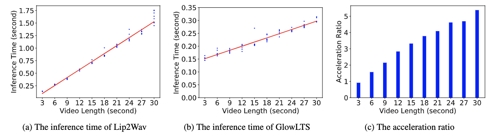

Flow-based Unconstrained Lip to Speech Generation
Abstract
Unconstrained lip-to-speech aims to generate corresponding speeches based on silent facial videos with no restriction to head pose or vocabulary. It is desirable to generate intelligible and natural speech with a fast speed in unconstrained settings. Currently, to handle the more complicated scenarios, most existing methods adopt the autoregressive architecture, which are optimized with the MSE loss. Although these methods have achieved promising performance, they are prone to bring issues including high inference latency and mel-spectrogram over-smoothness. To tackle these problems, we propose a novel flow-based non-autoregressive lip-to-speech model (GlowLTS) to break autoregressive constraints and achieve faster inference. Concretely, we adopt a flow-based decoder which is optimized by maximizing the likelihood of the training data and is capable of more natural and fast speech generation. Moreover, we devise a condition module to improve the intelligibility of generated speech. We demonstrate the superiority of our proposed method through objective and subjective evaluation on Lip2Wav-Chemisty-Lectures and Lip2Wav-Chess-Analysis datasets. Our demo video can be found at \url{https://glowlts.github.io/}.
Speed-up
We correct Figure4 in the paper as above. The max acceleration ratio is 5.377.